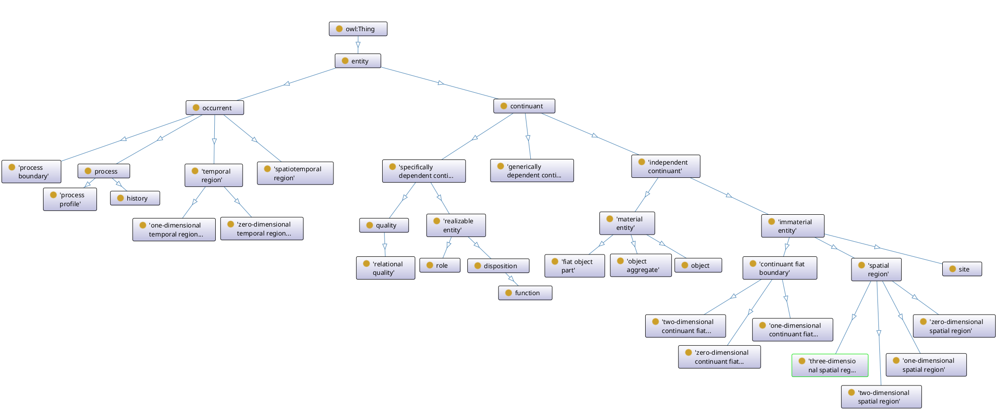
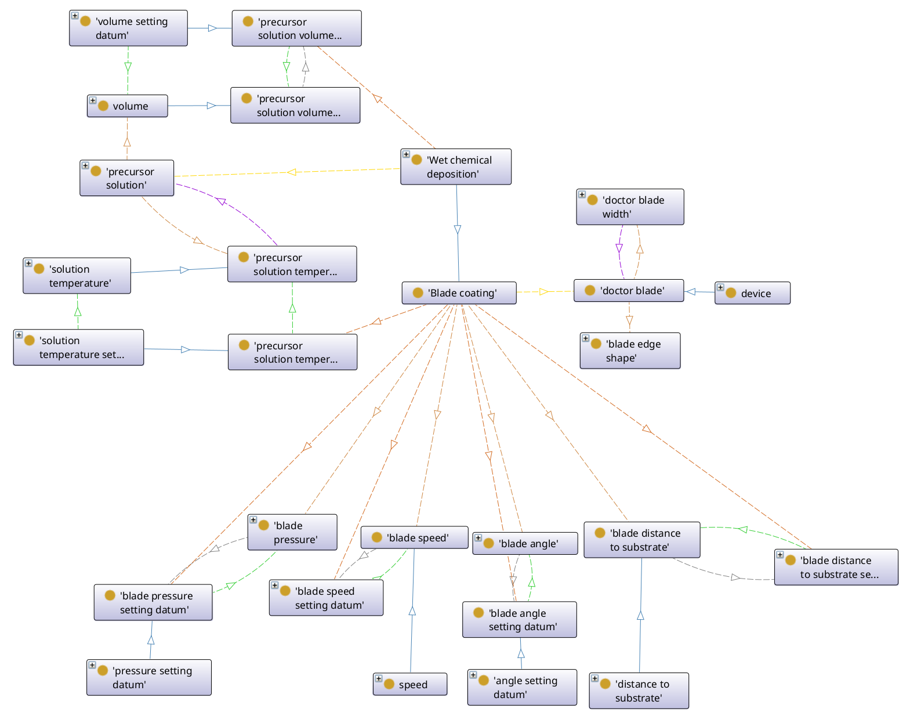
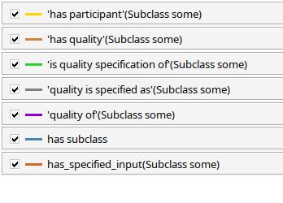
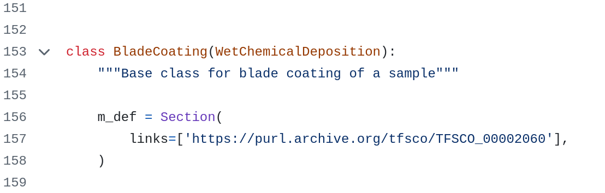
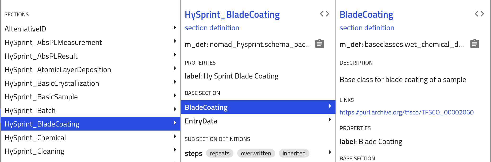

Ontology for thin-film solar cells (TFSCO)
Domain
The Ontology for thin-film solar cells (TFSCO) was created to provide a common terminology for the thin-film solar cell domain. It includes measurement and characterization processes, their parameters and relations between the participating entities.
Additional Information
Before we jump into the content here are some general informations about the TFSCO:
1. To browse the ontology visit the current repository of the TFSCO: https://purl.archive.org/tfsco.
2. You can find the latest version of the TFSCO at https://purl.archive.org/tfsco/latest
3. You can create an issue or contribute via https://purl.archive.org/tfsco/issues
4. It has been created in August of 2022 at Helmholtz-Zentrum Berlin für Materialien und Energie¹.
5. It is licensed under the CC BY 4.0².
Basic Structure
The TFSCO uses the Basic Formal Ontology (BFO) as its Top-Level-Ontology. Top-Level-Ontologies provide a framework, that "help integrate and organize information across different domains"³. It provides a basic backbone structure for the ontology by dividing everything in continuants ("things that persist through time"³) and occurents ("things that occur or happen"³ like events or processes). Therefore most of our measurements and characterizations are occurents while solar cells or measurement in- and outputs are continuants.
|  |
|---|
| Fig. 1: The BFO classes |
Classes and Relations
Central pieces of an ontology are the Classes and Relations. Classes describe all entities (continuants and occurents) while relations describe the connection between entities (e.g. the parthood between a solar cell and its different layers).
Classes
All entities that are present in the TFSCO are classes. They represent common concepts of reality from the thin-film solar cell domain. They also contain definitions, synonyms or alternative labels.
Relations
While the 'is_a' relation is a key-relation within thesauri and ontologies by providing a hierarchical (vertical) structure we provide further relations to describe the horizontal connections/interactions (e.g. the relation between a measurement and its input, which might include equipment settings and the device that is being measured).
Data Items
Within the TFSCO most measurement outputs, inputs and settings are data items.
Assay Outputs
The first data item we will look at are the assay outputs. Assay outputs describe anything that is the result of a measurement (assay). For now they include images and measurement datums.
Measurement Datums
Measurement Datums are datums, that are the result of a measurement process. (e.g. the measured temperature of a hotplate (e.g. 75°C))
Data Sets
Data Sets represent aggregations of data. Profiles, like the path of a print head or a voltage profile, and curves, like the JV- or UVVIS-Curves, are described as data sets.
Scalar Datums
Scalar Datums are datums, that consist of two parts. A numerical part and a unit part (e.g. 50nm, 15ml, 90°)
Setting Datums
Setting Datums are datums, that specify the setting of a given machine. (e.g. turning the temperature knob that controls the temperature of a hotplate to 180°C)
IRI (International Ressource Identifier) & PURL (Persistent Uniform Ressource Locator)
The TFSCO's PURL https://purl.archive.org/tfsco is a permanent link, that leads to the repository in which the TFSCO is currently stored.
Every Class and Relation within the TFSCO has an unique IRI (International Ressource Identifier). These identifiers can be used to annotate datasets and simplify cross-dataset and -database exchange.
For Classes, that have been created as part of the TFSCO, the IRI (e.g. for Blade Coating) looks like this: https://purl.archive.org/tfsco/TFSCO_00002060.
It consists of the PURL https://purl.archive.org/tfsco and a TFSCO_ followed by a unique 8-digit number that identifies the entity within the TFSCO.
Example of Usage
Blade Coating
Blade Coating is a deposition process, that deposits a new layer/phase onto some substrate by adding a precursor solution and removing excess ink by blade from a substrate.
In the middle of the picture you can see the Blade Coating-Class.
At the bottom and to the left, we can see the Blade Coating-Qualities (e.g. Angle of the Blade, the Volume of the Precursor Solution) and their accompanying Setting Datums.
To the right of the Blade Coating-Class we can see the Doctor Blade-Class. It is a participant in the Blade Coating-Process and its Qualities are the Edge-Shape and Width. On the right side of the Blade Coating you can find the Precursor Solution and its Qualities.
Blue arrows indicate the is_a Relation (e.g. Blade Coating is_a Wet Chemical Deposition).
The blade coating parameters and identificators can be found below the picture.
|  |
|---|
| Fig. 2: Blade Coating Classes |
|  |
| Fig. 3: Relation Explanation |
Blade Coating Parameters and IDs
The following blade coating-parameters are present in the TFSCO:
| Parameter | Ontology Class | Link |
|---|---|---|
| Blade Coating Process | blade coating | https://purl.archive.org/tfsco/TFSCO_00002060 |
| The Angle of the blade | blade angle | https://purl.archive.org/tfsco/TFSCO_00007011 |
| blade angle setting datum | https://purl.archive.org/tfsco/TFSCO_00007012 | |
| The pressure applied by the blade | blade pressure | https://purl.archive.org/tfsco/TFSCO_00007013 |
| blade pressure setting datum | https://purl.archive.org/tfsco/TFSCO_00007014 | |
| The traverse speed of the blade | blade traverse speed | https://purl.archive.org/tfsco/TFSCO_00007009 |
| blade traverse speed setting datum | https://purl.archive.org/tfsco/TFSCO_00007010 | |
| The width of the blade | doctor blade width | https://purl.archive.org/tfsco/TFSCO_00007016 |
| The shape of the blades edge | blade edge shape | https://purl.archive.org/tfsco/TFSCO_00007017 |
| The distance between the blade and the substrate | blade distance to substrate | https://purl.archive.org/tfsco/TFSCO_00007007 |
| blade distance to substrate setting datum | https://purl.archive.org/tfsco/TFSCO_00007008 | |
| The duration of the blade coating | process time | https://purl.archive.org/tfsco/TFSCO_00001063 |
| process time setting datum | https://purl.archive.org/tfsco/TFSCO_00002072 | |
| The temperature of the precursor solution | precursor solution temperature | https://purl.archive.org/tfsco/TFSCO_00007019 |
| precursor solution temperature setting datum | https://purl.archive.org/tfsco/TFSCO_00007021 | |
| The deposited precursor solutions volume | precursor solution volume | https://purl.archive.org/tfsco/TFSCO_00007022 |
| precursor solution volume setting datum | https://purl.archive.org/tfsco/TFSCO_00002160 |
Annotation of Datasets
The TFSCO is currently being used to annotate database schemas for the local Nomad oases at HZB. Nomad⁴ is an open source web-based research data management platform developed by FAIRmat⁵. The IRIs are being used to annotate classes (processes) and quantities (process parameter)(see figure 4) in the custom-made HZB Nomad Schemas⁶. Additionally the IRIs can be retrieved from the built-in Nomad Metainfo Schema (see figure 5).
|  |
|---|
| Fig. 4: Blade Coating Schema with Annotations |
|  |
| Fig. 5: Nomad Metainfo with TFSCO IRIs |
Sources:
¹ Helmholtz-Zentrum Berlin (HZB). https://www.helmholtz-berlin.de/
² Creative Commons. https://creativecommons.org/licenses/by/4.0/
³ Arp, R., Smith, B., & Spear, A. D. (2015b). Building Ontologies with Basic Formal Ontology. In The MIT Press eBooks. https://doi.org/10.7551/mitpress/9780262527811.001.0001
⁴ NOMAD. https://nomad-lab.eu/nomad-lab/index.html
⁵ FAIRMat. https://www.fairmat-nfdi.eu/fairmat/
⁶ HZB GitHub with Nomad Schemas https://github.com/nomad-hzb